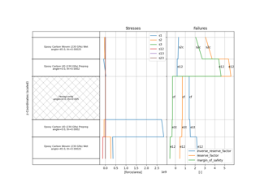
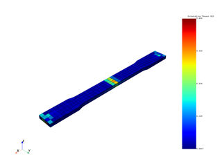
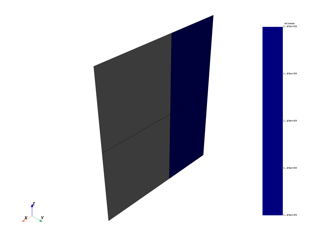
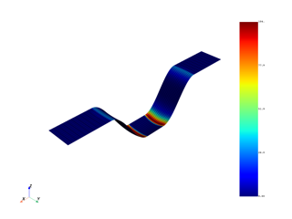
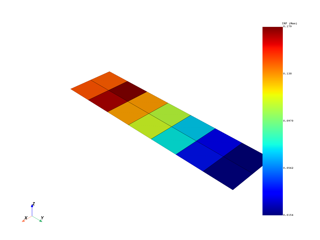
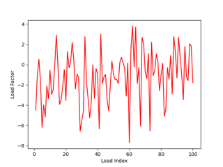

Examples#
These examples demonstrate the behavior and usage of PyDPF - Composites. Some additional modules are required to run the examples which can be installed with the following command:
pip install ansys-dpf-composites[examples]
It is recommended to run the examples in a Jupyter notebook or an IPython console. Copy / pasting to a standard Python interactive shell can lead to formatting issues (e.g. IndentationError). This issue is resolved with Python 3.13 and later.


Sampling point

Failure analysis for short fiber composites
Failure analysis for short fiber composites
Material properties and custom failure criterion
Material properties and custom failure criterion


Filter result data by different criteria
Filter result data by different criteria

Interlaminar normal stresses
Postprocess an assembly
Plot of the orientation tensor for short fiber composites
Plot of the orientation tensor for short fiber composites

Postprocess a harmonic analysis
Postprocess a harmonic analysis
Failure analysis of a MAPDL (RST) model
Failure analysis of a MAPDL (RST) model

Evaluate fatigue for a composite plate
Evaluate fatigue for a composite plate
Thermal analysis
Cyclic symmetry
Postprocess a solid model
LS-Dyna Bird Strike